Product Overview
Bubble Rolls are widely used protective packaging materials made from
polyethylene film with evenly spaced air-filled bubbles. These bubbles
provide excellent cushioning, shock absorption, and surface protection
for fragile and sensitive items.
Lightweight and flexible, bubble rolls are easy to handle and commonly
used in Indian packaging operations where goods travel long distances
and require impact protection during loading and unloading.
Key Features
- Excellent cushioning and shock absorption
- Protects against scratches and impact damage
- Lightweight and flexible material
- Easy to cut, wrap, and handle
- Cost-effective protective packaging solution
Specifications
- Material: LDPE / Polyethylene
- Bubble Type: Small bubble / Large bubble
- Roll Width: As per requirement
- Roll Length: Standard and custom lengths available
- Colour: Transparent
- Usage: Wrapping and cushioning packaging
Applications & Use Cases
- Packaging of fragile and breakable items
- Electronics and electrical goods
- Glassware and ceramics
- E-commerce and courier packaging
- Warehousing and logistics operations
Best Suited For
- Fragile goods transported over long distances
- Manual packing operations in warehouses and godowns
- Items prone to surface scratches or impact damage
Selection Note
Small bubble rolls are suitable for lightweight or delicate items,
while large bubble rolls are recommended for heavier goods and
rough handling common during Indian transport and loading.
Commonly Used Along With
- Corrugated Boxes
- BOPP Packing Tapes
- Stretch Film for outer wrapping
Product FAQs
-
What bubble size should be used for fragile items?
Small bubble rolls are ideal for delicate and lightweight items,
while large bubble rolls are better suited for heavier or high-impact goods.
-
Are bubble rolls suitable for long-distance transport in India?
Yes. Bubble rolls are widely used for long-distance transport where
vibration, stacking, and rough handling are common.
-
Can bubble rolls be reused?
In many cases, bubble rolls can be reused if the bubbles remain intact
and the material is not torn or punctured.
-
Do bubble rolls protect against moisture?
Bubble rolls offer basic moisture resistance but should be combined
with stretch film or outer wrapping in high-humidity conditions.
-
Are custom roll sizes available?
Yes. Bubble rolls can be supplied in custom widths and lengths
depending on bulk or project requirements.
-
Is bubble wrap suitable for e-commerce packaging?
Yes. Bubble rolls are commonly used in e-commerce and courier packaging
to protect products during transit and handling.
 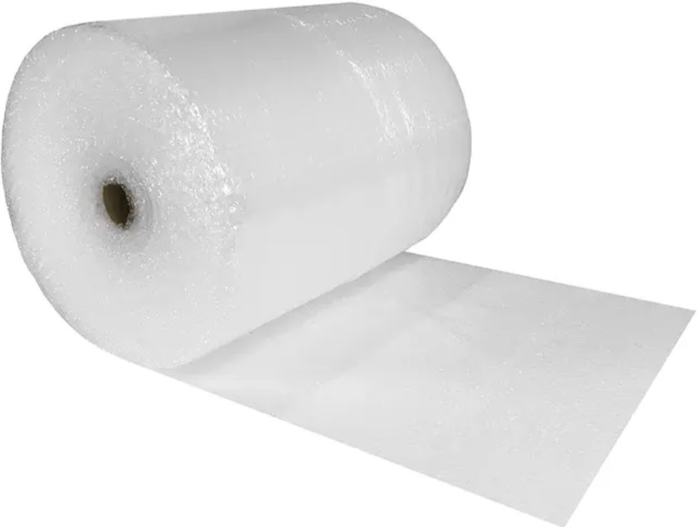
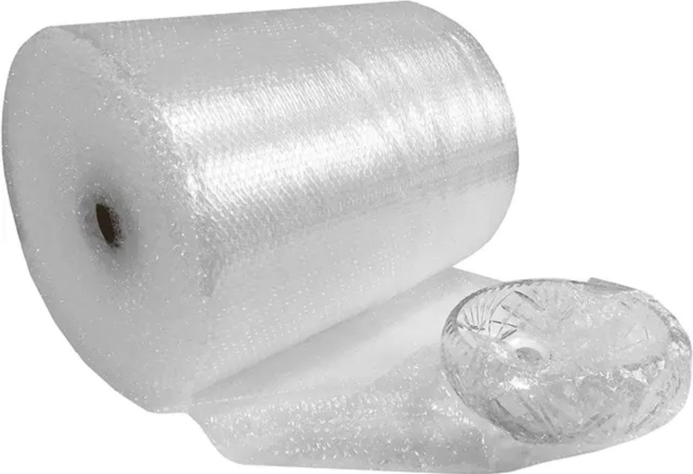
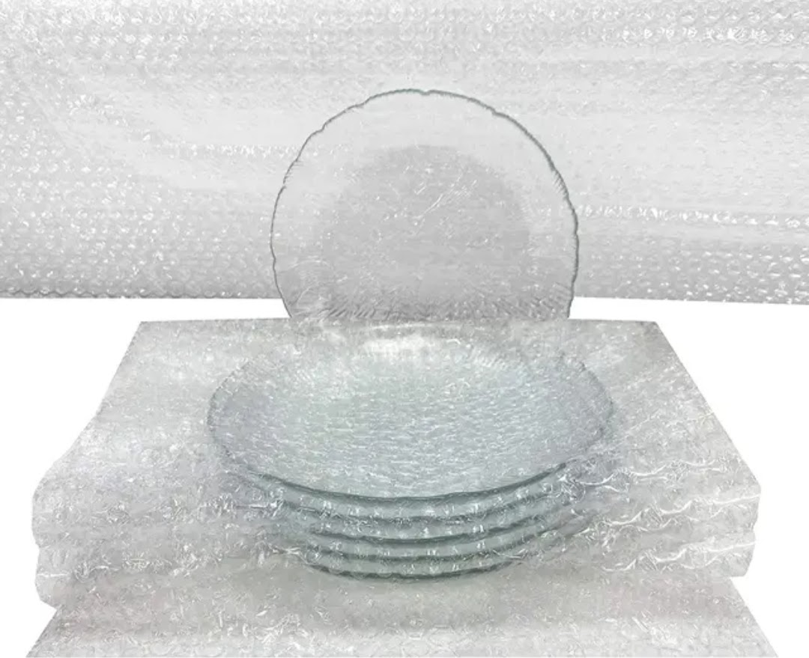
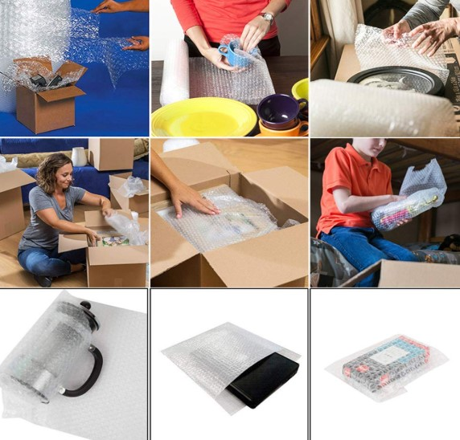
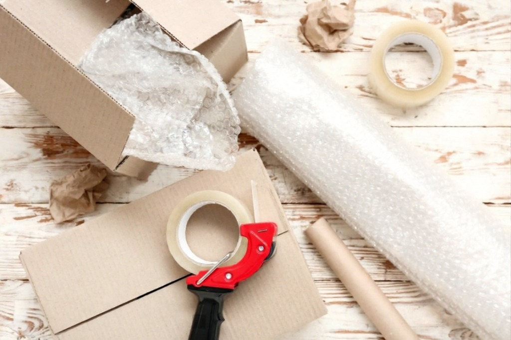
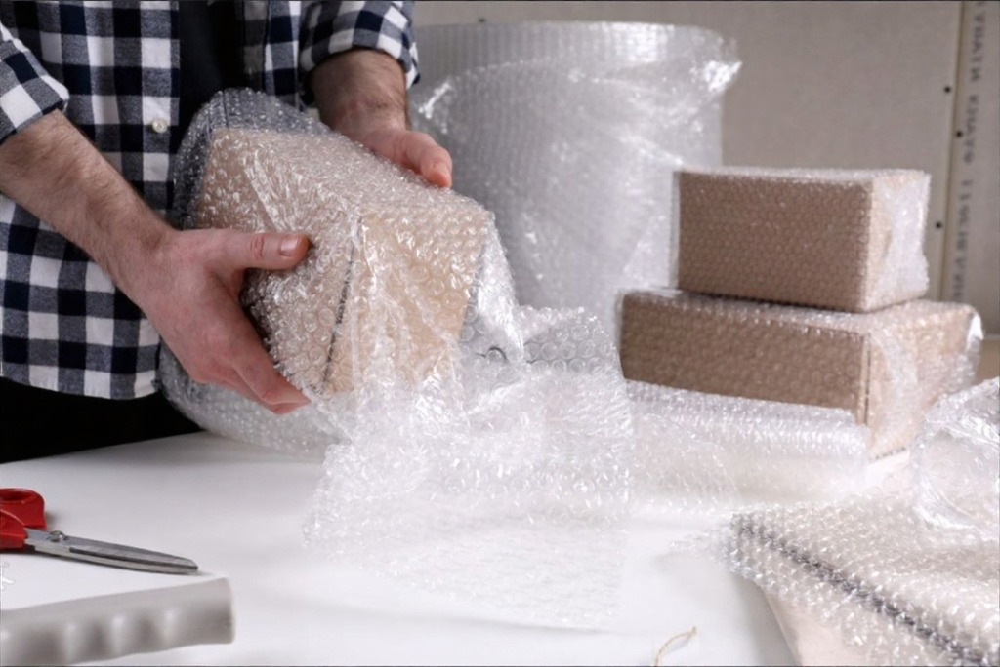
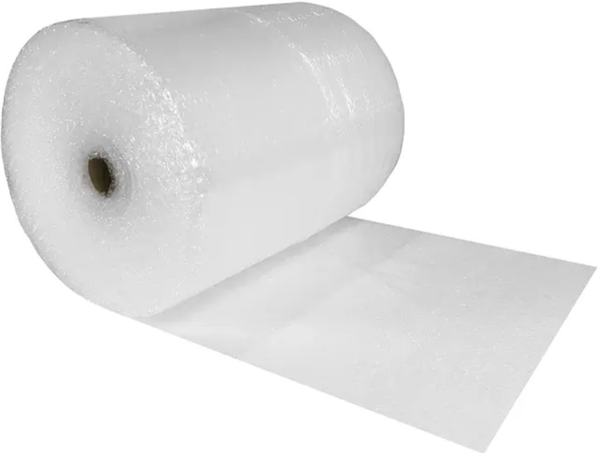
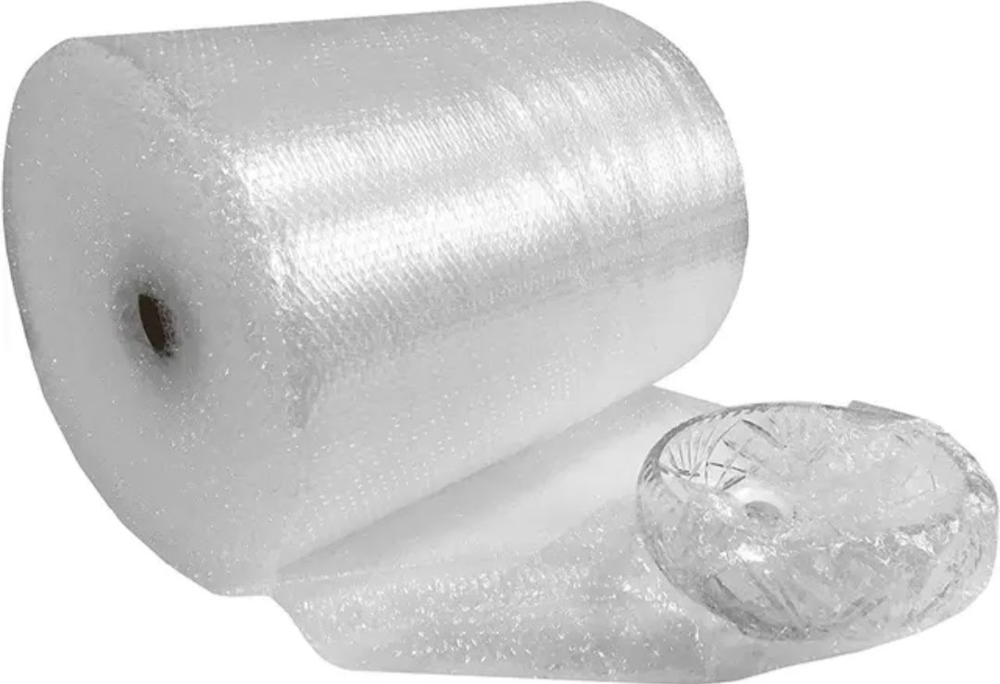
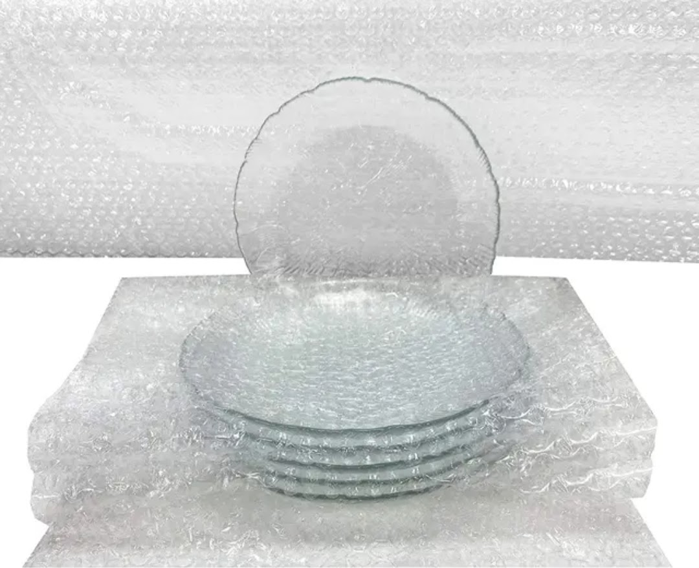
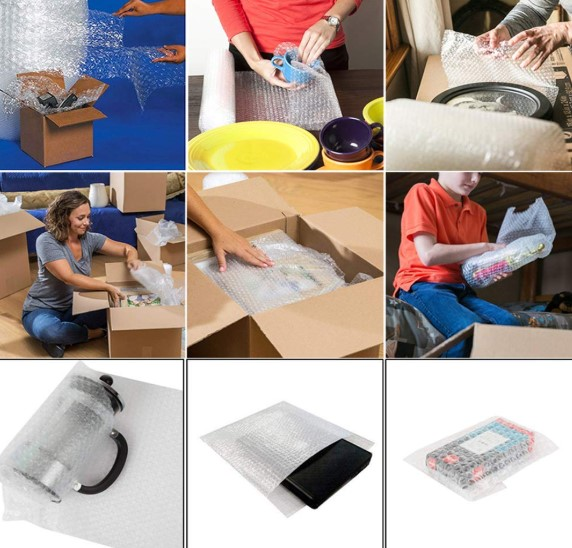
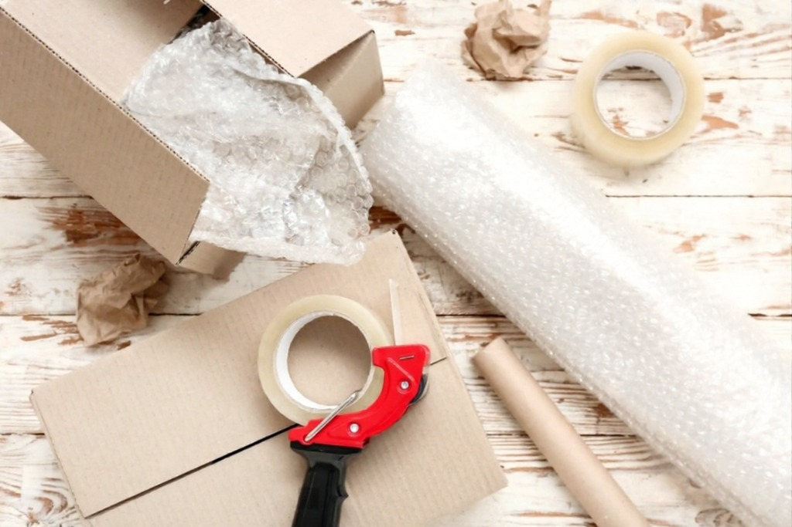
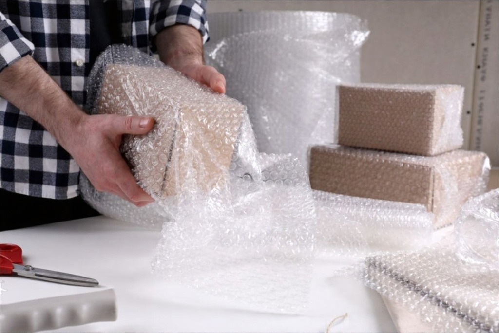